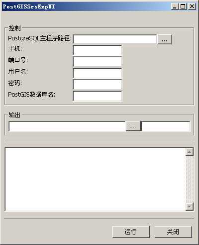

PostGISSrsExp是一个把PostGIS所有空间参考导出的工具。该工具由linux_23(李林)编写。。
实用类：geosings.tools.PostGISSrsExp.PostGISSrsExp
UI控制面板类：geosings.tools.ui.PostGISSrsExpUI.PostGISSrsExpUI
运行主界面如下：

主界面分为四个部分。一个是图层输入面板，一个是控制参数面板，一个是图层输出面板。一个是过程输出显示面板。
图层输入面板和图层输出面板的介绍可以看链接文档。最主要的核心在于控制 面板。
| PostgreSQL主程序路径 |
psql所在的路径（可选） 这个是设置PostgreSQL主程序路径，以便程序可以认到psql程序。如果你将PostgreSQL的bin目录设置成PATH，系统可以自动认到的话，就可以放空这个选项。如果没有，就填入那个bin目录的路径。 |
| 主机 |
主机名（可选） 这个是设置PostgreSQL所在主机，默认是本机，可以不填。 |
| 端口号 |
端口号（可选） 这个是设置PostgreSQL所在主机的服务端口号，默认是PG默认的端口，如果没有改变，可以不填。 |
| 用户名 |
用户名 这个是设置PostgreSQL操作用户用户名（必须填写）。 |
| 密码 |
操作密码 这个是设置PostgreSQL操作用户所用密码（必须填写）。 |
| PostGIS数据库名 |
空间参考存在的数据库（有建立PostGIS模板的数据库） 没有默认（必须填写）。 |
请注意：我们将把空间参考导出到一个目录中，不需要设置文件名。但是如果你设置了输出文件名，将只导出一个包含所有空间参考的文件(还包含epsg和proj表示)。
| geosings, RasterSpliter | 返回主目 录 |